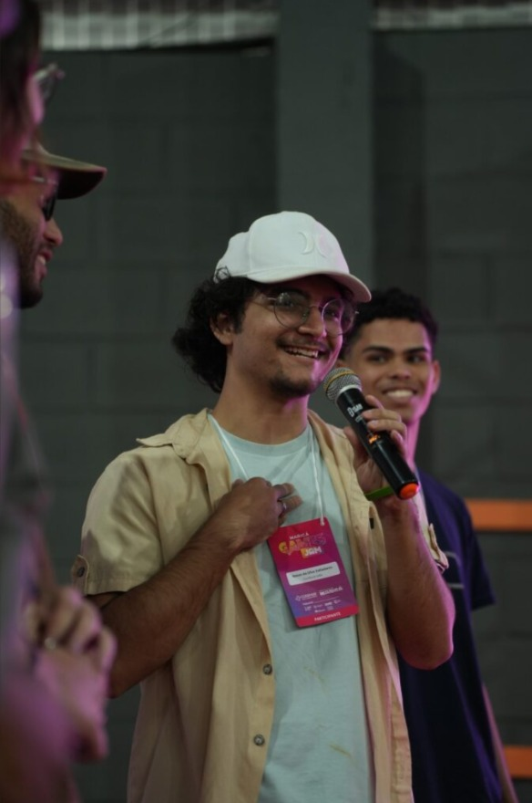

Um pouco sobre minha história Se você estiver lendo muito prazer em lhe conhecer, eu sou o Natan. De forma breve, sou nascido e criado dentro da comunidade da maré, sempre estudei em escola pública e sempre tive uma curiosidade e uma afinidade para o mundo da tecnologia. Me formei em análise e desenvolvimento de sistema de nível técnico pelo colégio Pedro II e agora estou tentando me desenvolver melhor no meio da tecnologia. Já atuei como educador de inglês de nivel básico para crianças e jovens periféricos e agora faço parte de um estúdio de jogos que foi formado no ano de 2025, o Cumbuca Labs, e nele eu atuo como game designer júnior me especializando em narrativa e desenvolvimento de mecânicas que é um sonho de quem é apaixonado por jogos como eu. Sou co-fundador em uma startup para o desenvolvimento do App BoraMiga que visa facilitar o processo de criar novas amizades entre o público feminino na faixa de 30+ que se sentem sozinhas e sem amizades femininas para aproveitar momentos e dividir interesses na vida. Fui palestrante a convite da FAPERJ no Expo favela pela falando sobre a startup da qual faço parte. E agora estou buscando me desenvolver melhor como desenvolvedor front-end e designer.

Sobre Mim
HardSkills
Inglês fluente, design digital utilizando a ferramenta figma, gestão de projetos utilizando Miro, programação de jogos utilizando Unity júnior. Formação técnica em análise e desenvolvimento de sistemas. Desenvolvedor front-end júnior.